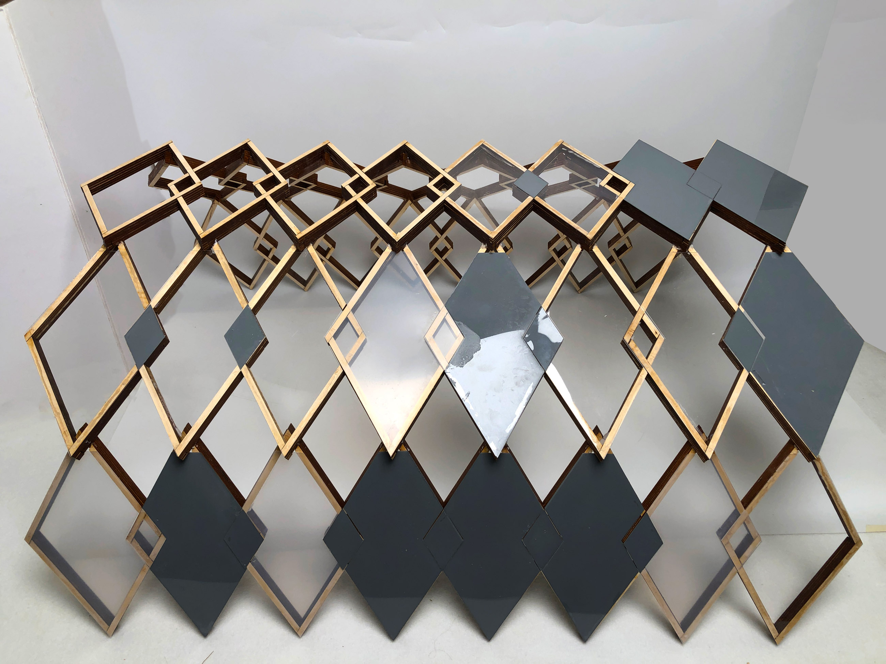
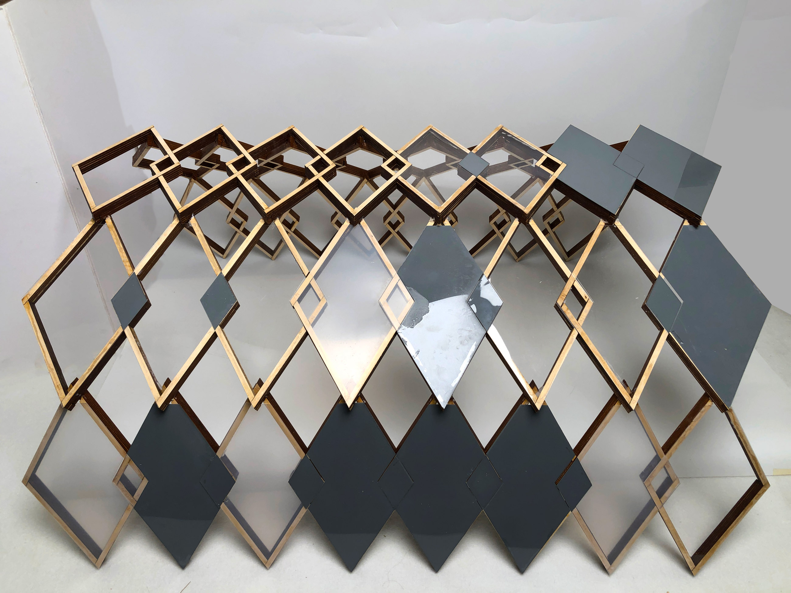

Diamond Pavilion
Worked With Tami Ayeye
ARC380 | Fall 2022 | Nicholas Hoban | Nathan Bishop
Rhino / Grasshopper / Vray / Photoshop / Illustrator / Laser cutter
With a group partner, I made a tectonic timber design that values high accessibility tothe public and highlights easy assembly.
After studying Wind Eaves, I was able to create a pavilion using a diamond-shaped structure with cladding as roofing to shows implicity yet sheer structural integrity. Creating this level of simplistic design is beneficial for the public to understand the functionality, which values accessibility.
Case study of timber tectonic joints Wind Eaves, Hsinchu, Taiwan

Model (1:20) - cardboard base , wooden dowel frame (6mmX6mm) - Front view

Model (1:20) - cardboard base , wooden dowel frame (6mmX6mm) - Side view

Circular Frame - curved shaped is too hard to manufacture at a large scale
L-Stack Frame - low stability (glued on edges)
Diamond Frame - most optimal design for timber tectonic design

L-Cross Frame - glued and no lock
Triangle Frame - joints are too difficult
tectonic timber prototype design - wooden dowels


1:10 model - -wooden dowel & white glue - Compleletely Hand-cut
timber truss design prototype
A3 model diagram - Pavilion final design- exploded axonometric & animation (made with Rhino Vray) - panels made with laser cutted acrylic glass & grey spray paint - randomized opacity panels for different layers of light level


 
